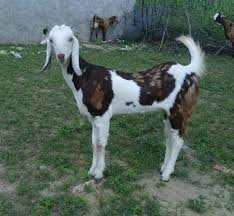
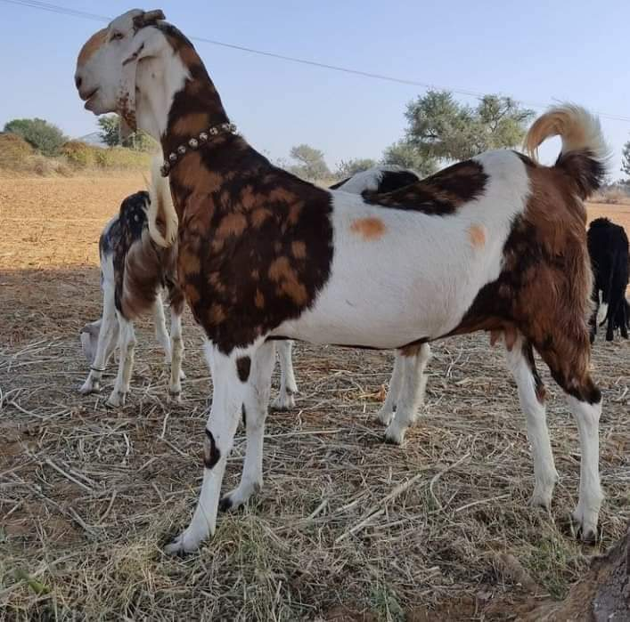

The Gujari goat, also known as the Gujri, is a dual-purpose breed from India, primarily known for both its milk and meat production. It is particularly popular in the state of Rajasthan, where it is valued for its adaptability and resilience in various climates.
